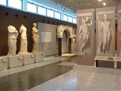
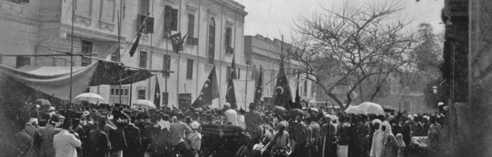

ذكرى افتتاح متحف اثار بنى سويف :
 كان قد تم افتتاح ذلك المتحف الأثري في يوم ٢٧ مارس من عام ١٩٩٧كما انه بالفعل يتكون من عدد طابقين فقط، لكن يضم الطابق الأول فقط منهما عدد من الآثار المصرية والتي كان فظ عثر عليها بالفعل في عدد من أهم تلك المواقع الأثرية الواقعة في تلك المحافظة الأثرية.
وكان ذلك ابتداء من حكم تلك العصور الاثرية في عهد ما قبل التاريخ وظل كذلك على امتداد ذلك العصر الفرعوني وعلى مدار طوال كلا من العصرين اليوناني ومعه العصر الروماني...
كان قد تم افتتاح ذلك المتحف الأثري في يوم ٢٧ مارس من عام ١٩٩٧كما انه بالفعل يتكون من عدد طابقين فقط، لكن يضم الطابق الأول فقط منهما عدد من الآثار المصرية والتي كان فظ عثر عليها بالفعل في عدد من أهم تلك المواقع الأثرية الواقعة في تلك المحافظة الأثرية.
وكان ذلك ابتداء من حكم تلك العصور الاثرية في عهد ما قبل التاريخ وظل كذلك على امتداد ذلك العصر الفرعوني وعلى مدار طوال كلا من العصرين اليوناني ومعه العصر الروماني...
في الواقع تم إنشاء ذلك المتحف الأثري في أوائل التسعينيات وكان ذلك على مساحة كبيرة وصلت الى تقريبا 4 آلاف متر، وكانوا قد صُمم في بنائه على هيئة نفس ذلك الهرم القريب منه وهو ميدوم.
حيث إن محافظة بني سويف التي بها هذا المتحف الأثري الذي قد أنشئ تقريبا منذ 31 عامًا كما انه تقترب مساحته تقريبا من يقرب من عدد 5 أفدنة.
كما انه يحتوي على مجموعة كبيرة من أهم تلك القطع الأثرية النادرة، والتي كانت قد استخرجت بالفعل من مناطق متنوعة في بني سويف
ولكن مع الأسف نظرًا لما حدث من عمليات التجاهل الظرف من وسائل الإعلام لذلك المتحف الأثري كان قد افتقد قيمته بشكل كبير كمزار سياحي ومن ثم كانت قظ تجاهلته أيضًا الوزارة في نصر.
فأصبح هذا المتحف الآن هو بالفعل عرضة لعمليات لانهيار؛ وكانت قد أدخلته الوزارة ضمن أهم مراحل التطوير وذلك بسبب ما حدث فيه من التآكل في الجدران بسبب الأملاح التي تسببت فيها المياه الجوفية وايضا معها الرطوبة.

العيد القومى لمحافظة بنى سويف :

في 15 مارس من كل عام تحتفل محافظة بني سويف بعيدها القومي تخليداً لتضامن شعبها مع ثورة 1919 بقيادة الزعيم الوطني سعد زغلول؛
حيث هاجم الأهالي المحكمة التي عُقدت لمحاكمة الثوار وحاول الأهالي القبض على القاضي الانجليزي فاضطر الانجليز لإطلاق النار على الثوار فاستشهد الكثير منهم .
كما قام أهالي المحافظة بقطع خطوط السكك الحديدية لقطارات الإنجليز ما تسبب في انقلاب قطارات وموت جنود إنجليز.
كما قام أهالي المحافظة بقطع خطوط السكك الحديدية لقطارات الإنجليز ما تسبب في انقلاب قطارات وموت جنود إنجليز.